Module 4 — Connectivity
English study notes in the original five-lesson order. Course text is paraphrased; retained illustrations keep their original English content. Configuration descriptions reflect the viewed course version, rather than a current connector installation manual.
4.1 Overview
Mia introduces connectivity as the foundation that lets ISC collect identity information and carry access decisions into the organization's systems. Those systems may run in a public cloud or on the organization's own servers. The module asks how connectivity is structured, why connectors are needed, how cloud and on-premises applications are connected, and how those connections are secured.
By the end, distinguish the system being represented, the connector that communicates with it, and the infrastructure on which that connector operates.
Missing artwork: this lesson's Mia banner and the common photograph were background-only assets and were not saved. The retained footer is below.
 Lesson footer
Lesson footer4.2 Key terminology and components
Sources
A source is ISC's representation of an external system holding accounts, access information or personnel records. Examples include HR and finance systems, ERP, customer-management applications, Active Directory, Microsoft Entra, GitHub, custom applications, JDBC-accessible databases and spreadsheets.
The three expanded source panels distinguish representation, data and direction of movement:
Representation. Administrators create a source object to represent an application or external system inside ISC.
 Source representation
Source representationAttributes and access. A source holds the relevant user and account attributes, such as a name, username, email address and department, as well as information describing access or restrictions.
 User attributes
User attributesAggregation and provisioning. Aggregation reads information from the external system into ISC. Provisioning sends attribute or access changes back toward that system. Reading a system and changing it are separate capabilities.
Aggregation and provisioning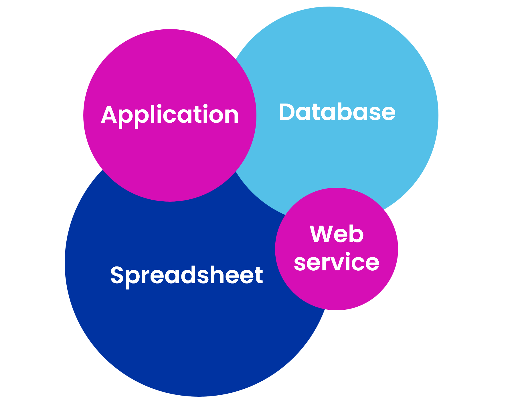
Applications, databases, spreadsheets and web servicesVirtual appliance
A VA provides a secure connection layer between the tenant and on-premises applications. It uses SailPoint APIs, connectors and integrations, with configurable logic and schemas supporting the integration. VAs are deployed behind the organization's firewall; SailPoint manages their software updates. They are grouped in clusters that serve connected sources.
The direction of communication matters: the VA initiates outbound calls to the tenant, rather than the tenant opening a direct inbound connection to the appliance.
 Virtual appliance connectivity
Virtual appliance connectivityConnectors
A connector is the software logic that communicates with a particular system. When a source object is created, its connector operates in a VA or in the tenant, depending on the connector architecture. This allows ISC to read account data and, where supported, perform changes. The course uses Oracle HR and GitHub as examples of systems whose account and entitlement information may need to stay aligned with identity decisions.
 Connectors and VAs
Connectors and VAsThe four flashcard concepts are expanded below:
Aggregation brings account and access data from sources into ISC.
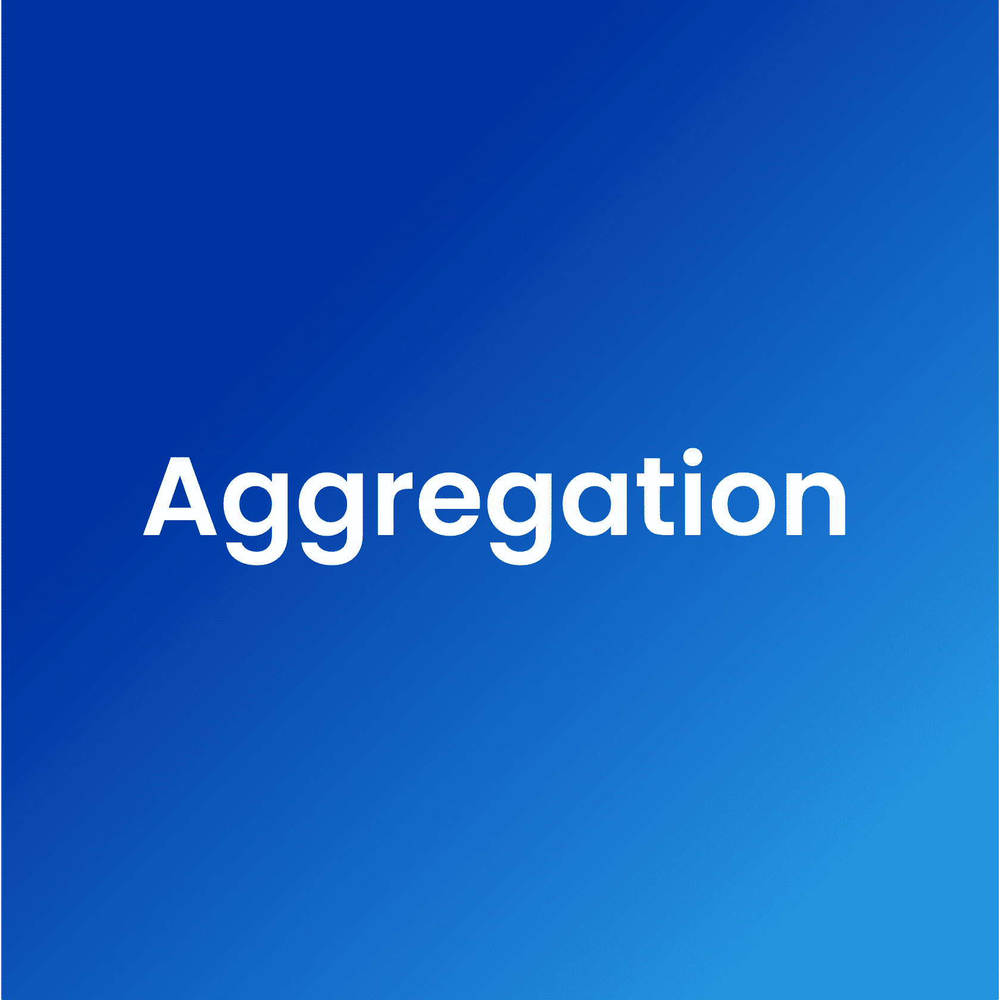
AggregationProvisioning carries account and access changes outward to source systems, using the supported fulfillment method.
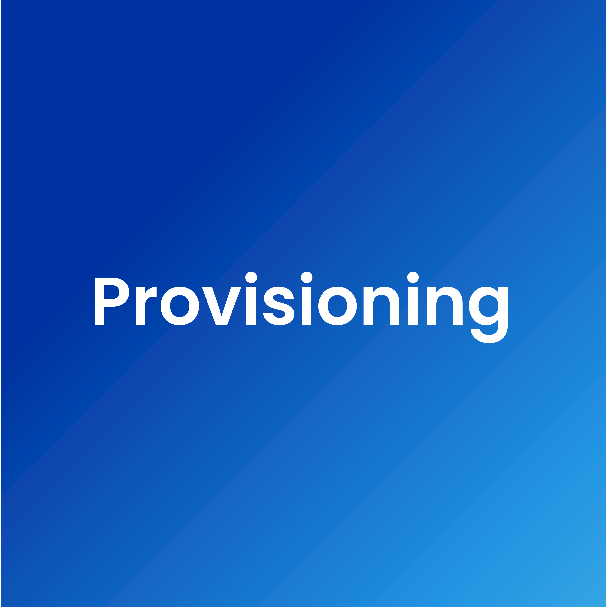
ProvisioningIntegration connects deeper functionality of enterprise, collaboration or service-desk applications with ISC.
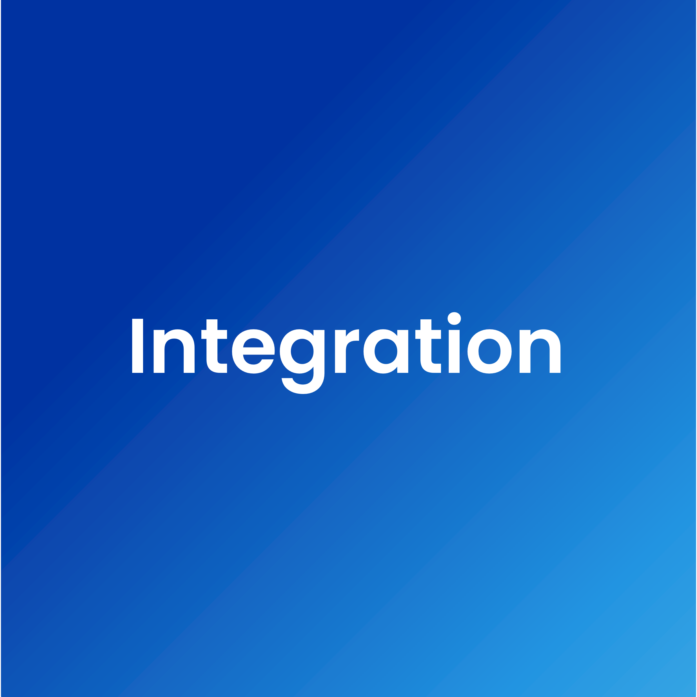
IntegrationExtension refers to advanced configuration or rules supported by certain connectors. Connector capabilities differ, so an extension should not be assumed to apply to every source.
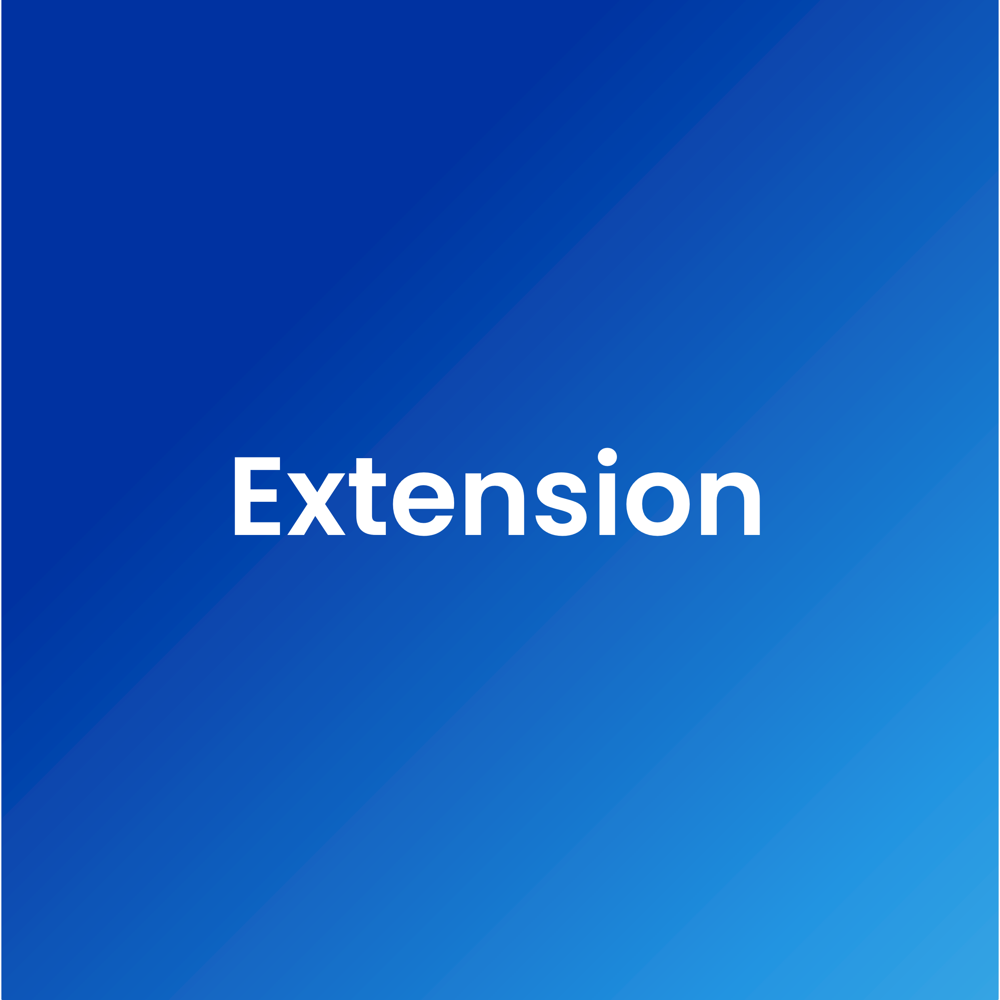
Extension Narrator transition
Narrator transitionIntegrations
An integration links ISC capabilities with functions of a more complex enterprise or service-desk platform. The course examples include Zendesk, ServiceNow, BMC Helix, Atlassian/Jira and a generic service-desk option.
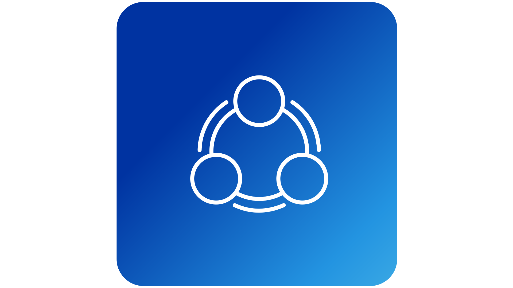
IntegrationIntegrations involve support and development relationships with the external vendor and may require additional subscriptions or licensing. They still use an appropriate connector: the examples associate Workday with its Workday connector and ServiceNow with its ServiceNow connector. The connectivity and integrations catalog is an external reference and was not downloaded into this edition.
IQService
IQService is a lightweight integration service for functionality available through Windows APIs. It provides a communication path that a connector can use when working with Windows-related systems.
Installation. The lesson places IQService on Windows servers that have the required connectivity to target systems. It does not supply a complete host-sizing or installation checklist.
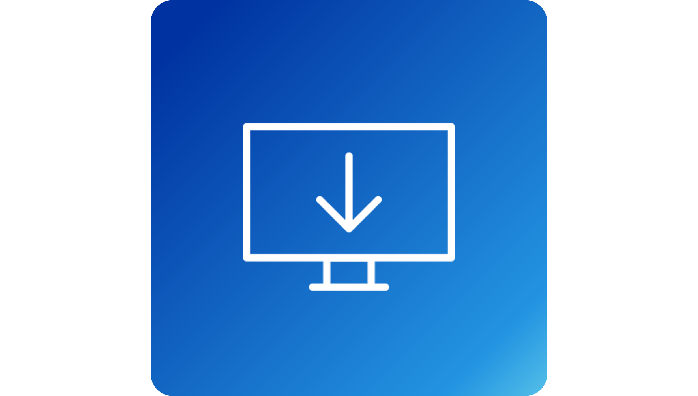
IQService installationSecurity. The lesson discusses certificate-based client authentication and TLS encryption as ways to protect the communication channel. It describes client authentication as optional in the course configuration, rather than demonstrating that an unprotected channel is appropriate for a particular organization.
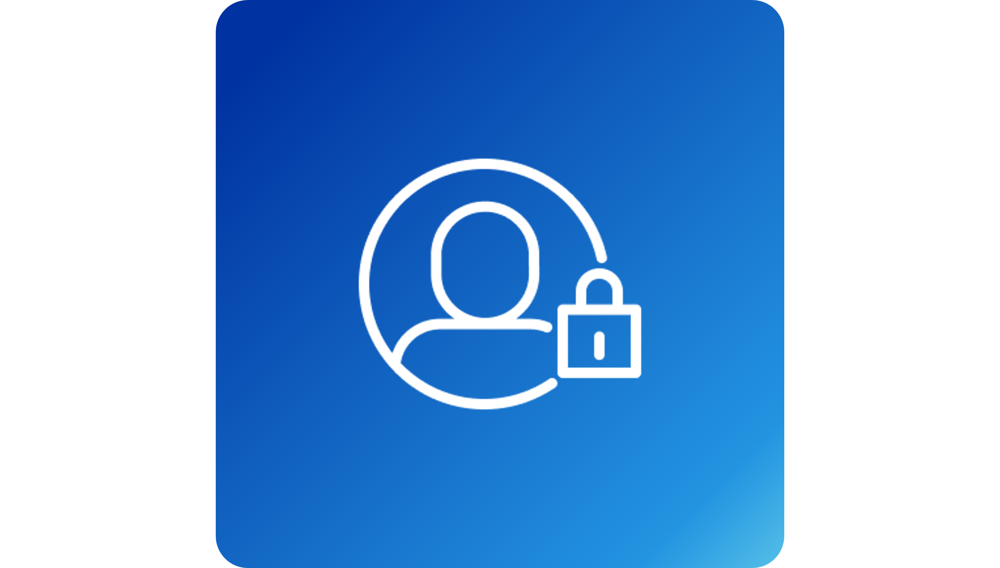
IQService securitySupported-source examples. The listed systems are Microsoft Active Directory, Entra ID, SharePoint Online and Server, HCL Domino and Windows Local Source. Connector-specific requirements still need to be checked in the relevant guide.
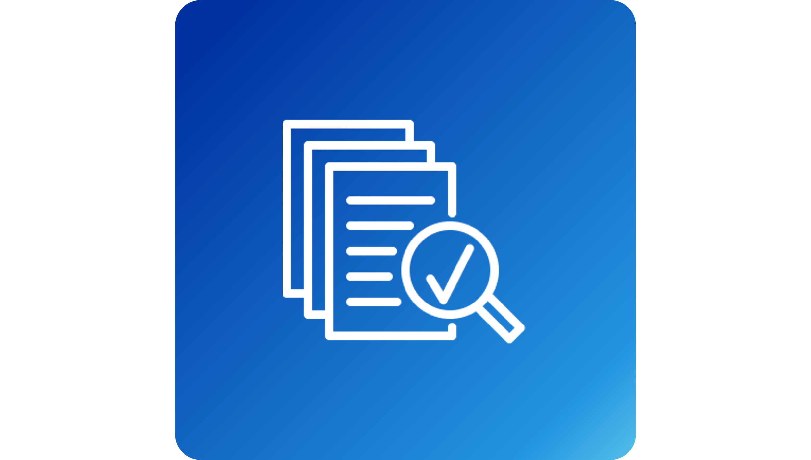
IQService supported sources Knowledge check
Knowledge checkReview
A source represents the system and its data; a connector performs the communication; a VA provides the connection infrastructure where that architecture requires one. Identify which direction data travels when discussing aggregation versus provisioning.
Coverage: all three source accordions and continuation sections were read. Both sides of the four flashcards were available in the inspected page. Quiz responses were not submitted. No separate narration transcript was exported.
4.3 Architecture and connectors
Connectivity options
Choose connectivity based on the target application's interfaces, the organization's security requirements and the identity use cases. Complex or critical applications may need richer integrations than a generic account import.
Preconfigured connectors contain application-specific features and configuration support.
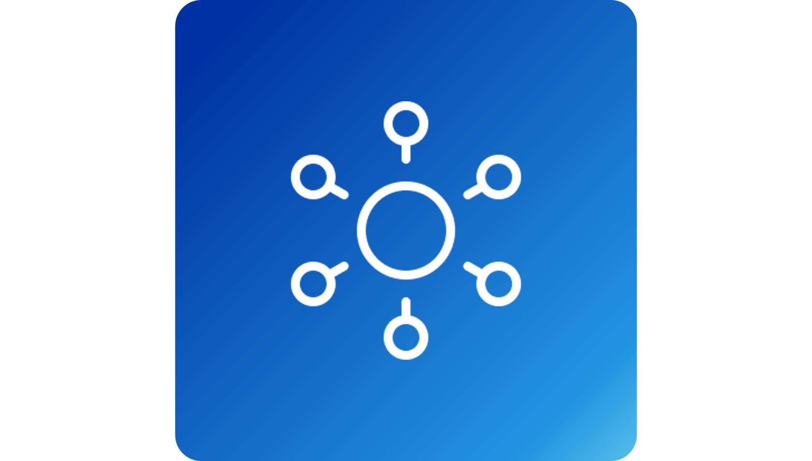
Preconfigured connectorsStandards-based connectors support common protocols or interfaces such as JDBC, SCIM, LDAP and web services.
 Standards-based connectors
Standards-based connectorsAdvanced integration modules support more specialized use cases in areas such as ERP, IT service management, privileged access management and healthcare.
 Advanced integration modules
Advanced integration modulesSaaS connectors communicate directly with supported cloud services without an on-premises VA.
 SaaS connectivity
SaaS connectivityVA-based and SaaS categories
VA-based connectors read account data and provision changes through a configured VA cluster. The course notes that these were previously called direct sources.
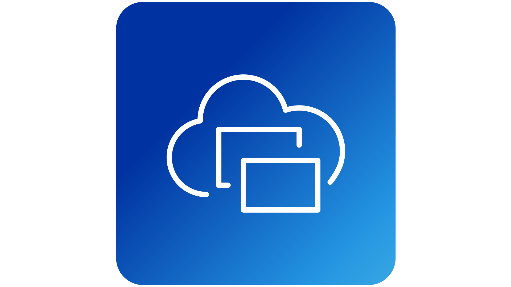
VA-based connectorSaaS connectors provide account reading and supported provisioning without requiring an on-premises VA cluster. Both categories connect ISC to target applications, but their deployment and operational dependencies differ.
 SaaS connector
SaaS connectorMicrosoft Active Directory: both tabs expanded
The connector supports aggregation, provisioning and administration of Active Directory. The lesson highlights delta aggregation, password management and Password Intercept. Delta aggregation processes data that was added, removed or changed, rather than reloading everything.
Configuration uses VAs between the tenant and Active Directory, with IQService for Windows API operations. The architecture can span domains and forests. The course also discusses connector rules and PowerShell scripts as part of the supported customization approach.
 Microsoft Active Directory
Microsoft Active DirectoryMicrosoft Entra SaaS integration: both tabs expanded
This integration manages account types, entitlements and Entra permissions. The lesson highlights support for more complex functions, Azure Privileged Identity Management and delta aggregation.
It can be configured as a source or as an integration for additional functionality. Connection settings use the relevant tokens or credentials. Filters for entitlement aggregation form part of configuring PIM-related management. These notes retain the conceptual setup requirements without storing any credentials.
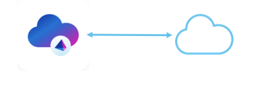
Microsoft Entra SaaS integrationDelimited File: both tabs expanded
The delimited-file connector aggregates accounts and entitlements from CSV files. It supports a custom account schema and multi-valued group objects.
This method does not require a VA. Create the source, import or define its schema, and use column headings in the file's first row to identify account attributes. The source configuration defines the delimiter; the course's default example is a comma. Data can be uploaded manually through the interface or supplied through the API.
 Delimited File connector
Delimited File connectorJDBC: both tabs expanded
JDBC is a generic connector for database-oriented applications, often useful when no higher-level application API is available. The course lists MySQL, Oracle, IBM DB2, Sybase and Microsoft SQL Server as database examples. Discussed capabilities include aggregation, provisioning and support for governance review; encrypted communication is available for supported source configurations.
Configuration requires a VA cluster, the appropriate JDBC driver and a service account for the connection. Define the entitlement schema for entitlement aggregation. The lesson also identifies Build Map and provisioning rules as parts of completing the configuration. Exact query syntax, driver installation and rule contents are outside this captured lesson.
 JDBC connector
JDBC connectorReview and limitations
Compare the operating dependencies before choosing a connector: an application-specific feature set, a generic protocol, a VA cluster, a Windows API dependency, or direct SaaS connectivity. The lesson identifies Active Directory and Entra as delta-aggregation examples; it does not establish that every other connector lacks the feature in all versions.
Both supported-feature and configuration tabs for all four examples were read. The knowledge-check matching descriptions were available in the page, but no answers were submitted. External connector guides and executable demonstrations are not included.
4.4 User and application onboarding
Configure sources before loading data
Creating and configuring sources comes before aggregation can load the relevant records into the tenant. The source describes the data and access that ISC will manage.
An authoritative source supplies the primary people or HR records. There may be several: for example, employee records in one system and contractor records in another.
 Authoritative sources
Authoritative sourcesNon-authoritative sources represent other accounts and access to govern. Examples include directories, databases, web applications and mainframes.
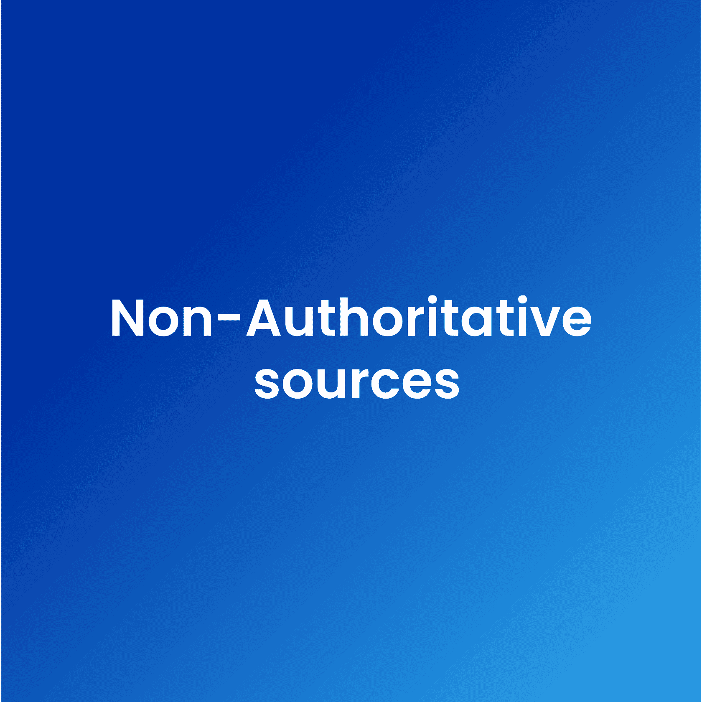
Non-authoritative sourcesSource configuration: five diagram markers expanded
 Source configuration components
Source configuration componentsMetadata. A form-based configuration identifies and describes the source within ISC.
Connection settings. Parameters depend on the connector and target application. Examples include domain information, service accounts, REST or SOAP settings and database queries. Consult the connector guide to determine which parameters are actually required.
Account schema: attributes to read. The schema specifies what is collected during aggregation. It describes account data and may include the account's groups or entitlements.
Account schema: attribute characteristics. The Account Schema page supports creating, editing, importing and deleting attributes. Special characteristics include the account name, account identifier, multi-valued fields and access-item lists for non-authoritative sources.
Account aggregation. Aggregation can be scheduled or performed manually, as with a file upload. An account-deletion threshold protects against excessive removal of account data during an aggregation job. The Latest Account Aggregation area reports the latest operation and its outcome.
 Connector documentation
Connector documentationThe linked connector guides remain external; their connector-specific instructions were not copied into this study book.
Application onboarding
Application onboarding helps discover non-authoritative applications, create sources and recommend configuration. The course discusses AI assistance for discovery, account correlation and account provisioning, with the aim of reducing setup effort and improving consistency.
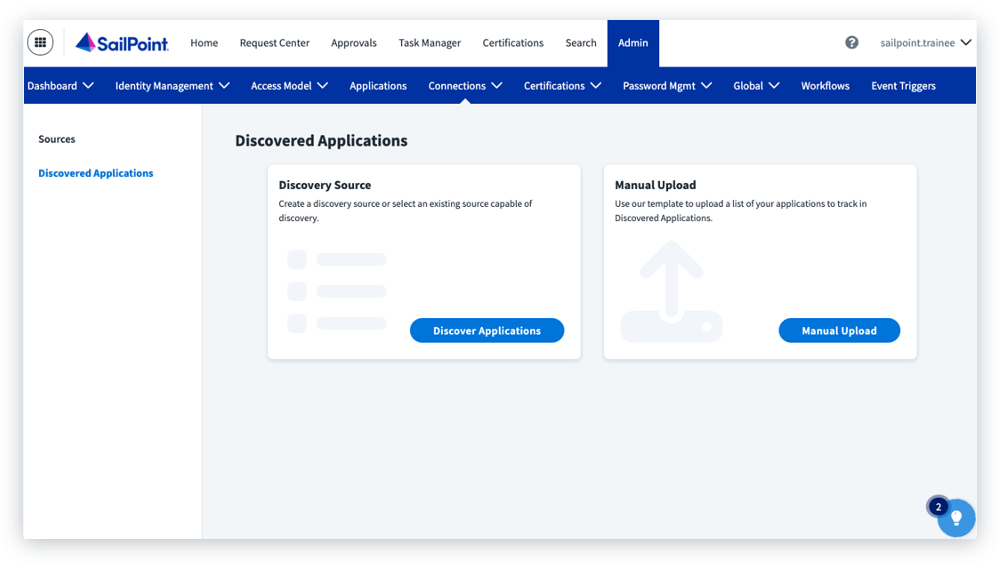
Application onboardingA separate capability, Native Change Detection, can notify administrators about changes made outside ISC. The viewed lesson describes this in relation to authoritative sources. Its full supported-source scope and detailed settings were not established in this capture.
Automatic discovery: all five timeline steps
1. Identify the existing SSO environment. The example begins with business applications already configured with a single sign-on provider.
 Automatic discovery step 1
Automatic discovery step 12. Connect ISC to that SSO provider. This supplies the starting point for discovering the connected applications.
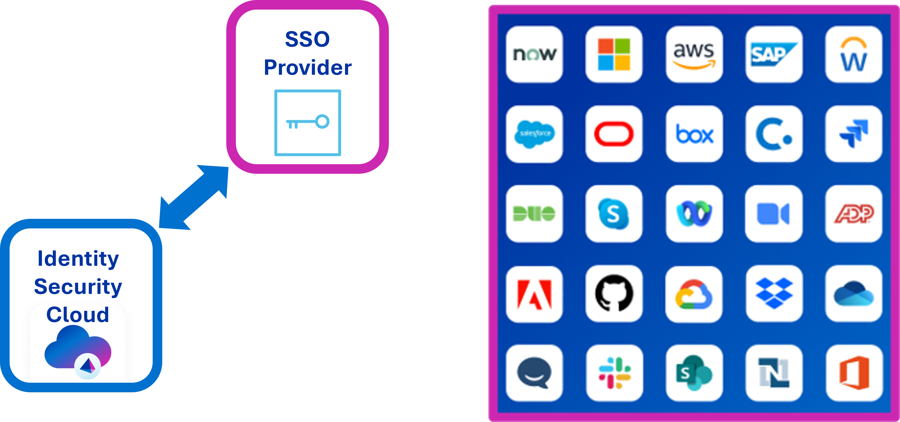
Automatic discovery step 23. Use AI-assisted application onboarding. The feature helps identify the connectivity information for those applications.
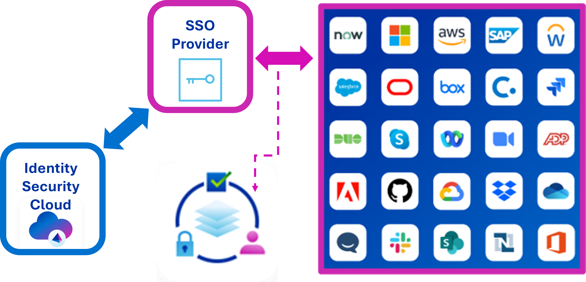
Automatic discovery step 34. Load the discovered information into ISC. The application information becomes available for onboarding work.
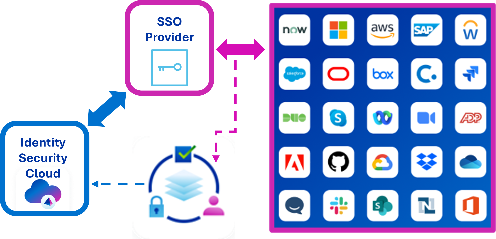
Automatic discovery step 45. Establish application connections. ISC can then connect with the identified business applications through the appropriate configured connectivity.
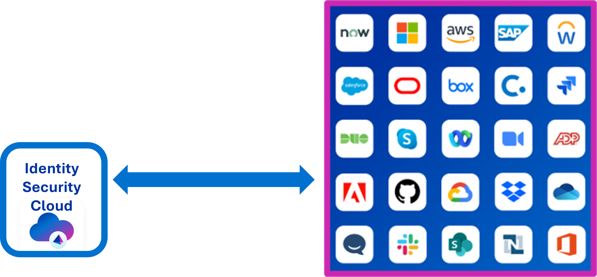
Automatic discovery step 5Manual discovery: all three carousel panels
1. Prepare an application inventory. Without an SSO provider for discovery, create a CSV containing the business applications and their connection information.
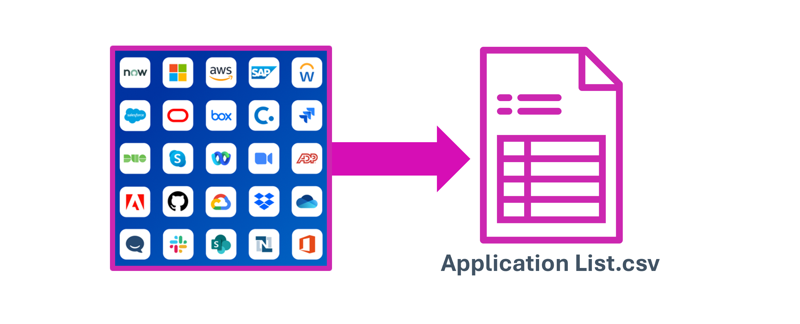
Manual discovery step 12. Upload the file. Application onboarding parses the listed application information.
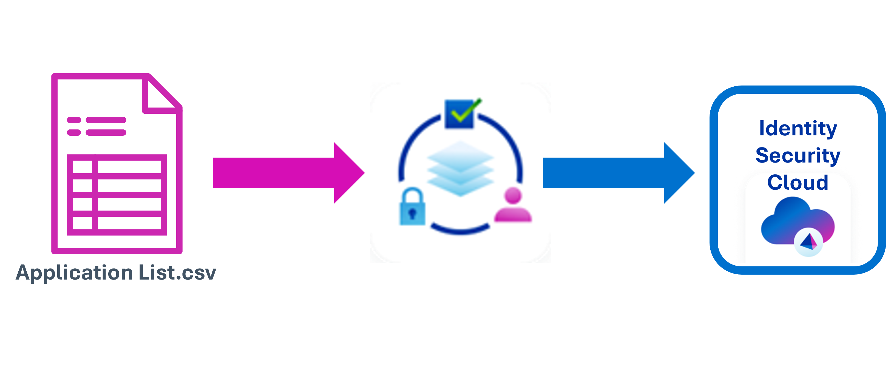
Manual discovery step 23. Complete the application connections. The inventory supports connecting ISC with the listed applications. The short course sequence does not replace the individual connectors' configuration and validation requirements.
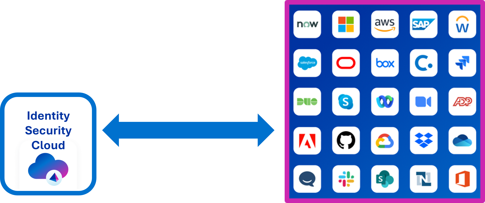
Manual discovery step 3Configuration recommendations
After discovery, configuration recommendations address areas such as account schema and correlation logic. Discovery identifies what needs onboarding; recommendations help administrators configure the resulting sources. Administrative review and validation still matter when turning recommendations into working configurations.
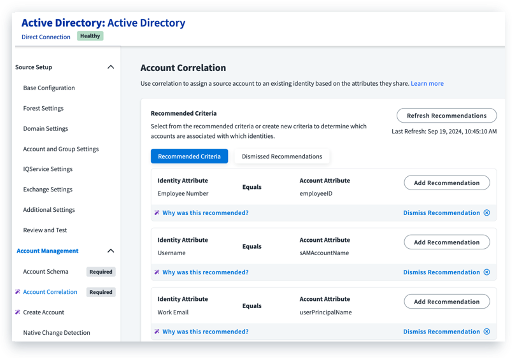
Application configuration recommendationsCoverage: all five source-diagram markers, the five-step automatic discovery timeline and the three manual-discovery carousel explanations were read. All available inline images, including the configuration example, were saved. No source was created, no CSV was uploaded, and no quiz answer was submitted while preparing these notes.
4.5 Recap
The module's outcomes are to explain connectivity terminology, recognize connector types and architectural patterns, and identify the requirements and steps used to establish tenant access to systems.
For revision, trace a sample integration: identify its source object, decide where the connector runs, note whether a VA or IQService is involved, define the schema and connection parameters, then validate aggregation before relying on automated access changes. This revision sequence is a study aid derived from the concepts above.
Missing artwork: the recap banner and common photograph were not saved. The retained footer is below.
Lesson footerModule coverage and missing materials
All five lessons were inspected, including continuation sections. Forty-one distinct inline image URLs were retained and placed with their topics; repeated footer and review graphics share saved files.
Three background-only assets were not saved: the common photograph, the shared Mia lesson banner and the recap banner. Exact paths are recorded in coverage.json. External catalogs and connector guides, separate narration transcripts and executable course interactions are not included. Course interface images and configuration descriptions reflect the viewed version. No quiz attempt was submitted and no live tenant configuration was changed.